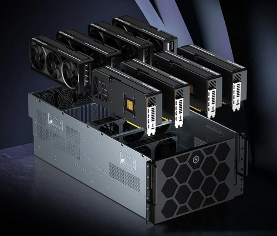

Задачи машинного обучения — обучения нейросетей (Machine Learning, ML) и запуска больших языковых моделей (Large Language Model, LLM) — предъявляют к железу особые требования. Сервер с классическим CPU с такими нагрузками справляется в десятки раз медленнее специализированной GPU-платформы. При этом выбор конкретной конфигурации — не очевидная задача. Разные задачи требуют принципиально разного железа.
В качестве отправной точки можно посмотреть готовые GPU-сервера под ИИ. Там видно, какие GPU ставят под инференс (то есть, под запуск для конечных пользователей), а какие — под обучение, и почему конфигурации так сильно отличаются по цене и составу.

Видеокарта в задачах ML — это основной вычислительный узел: именно на GPU выполняются матричные операции прямого и обратного прохода при обучении. Объём видеопамяти VRAM напрямую определяет, модели какого размера возможно запустить без квантизации. Следует учитывать, что нехватка VRAM не компенсируется ничем — модель либо помещается в память, либо нет.
Три сценария: DevBox, рабочая станция, кластер
Для локального развёртывания LLM и исследовательских экспериментов подходит формат компактной рабочей станции с 4...6 GPU на борту. Соединение между GPU обычно производится через NVLink. Такая станция свободно размещается в офисе, не требует серверной комнаты и даёт достаточно мощности для дообучения моделей до 30–70B параметров. Это оптимальный старт для ML-команд, которые только выстраивают свою инфраструктуру.
Под более тяжёлые задачи — дообучение моделей от 70B, построение рендер-ферм или корпоративные вычисления — нужна серверная платформа с поддержкой до 8 GPU и, желательно, многопроцессорной конфигурацией на AMD EPYC. Такие системы поддерживают InfiniBand-интерконнект для объединения в кластер и рассчитаны на круглосуточную production-нагрузку.
Для инференса в продакшне, где важна стабильность и плотность вычислений на единицу площади, оптимален стоечный форм-фактор — компактное размещение с хорошей теплоотдачей и лёгким масштабированием.
Выбор GPU: L40S, H200 или RTX PRO 6000
NVIDIA L40S — сбалансированный вариант для инференса и генеративных моделей: 48 ГБ VRAM с поддержкой FP8 позволяют запускать крупные модели без потери точности при разумной стоимости. NVIDIA H200 — топ для обучения самых тяжёлых LLM: огромная пропускная способность памяти HBM3e и поддержка NVLink делают его незаменимым для frontier-моделей, но и ценник соответствующий.
RTX PRO 6000 с 96 ГБ GDDR7 ECC — универсальный вариант для студий, которым нужны одновременно и рендеринг, и 3D и нейросети в одной машине без компромиссов.
Кластер: когда масштабироваться
Горизонтальное масштабирование в кластер имеет смысл, когда одна машина стала узким местом: по объёму VRAM, пропускной способности памяти или времени итерации обучения. При переходе к кластеру критически важен интерконнект: InfiniBand обеспечивает задержки на порядок ниже обычного Ethernet, что напрямую влияет на эффективность распределённого обучения.
При постоянной нагрузке собственное железо окупается за 12–18 месяцев. Аренда A100 в AWS обходится в $3–4 в час — при круглосуточной работе это $2000–3000 в месяц только за один узел. Плюсы локального решения — полный контроль над данными, отсутствие зависимости от провайдера и предсказуемые CAPEX-расходы. Для команд, работающих с чувствительными данными или с требованиями по безопасности, локальный GPU-сервер часто становится единственным разумным вариантом.
Определите задачу: инференс готовой модели, дообучение существующей или обучение с нуля. Это три принципиально разных сценария с разными требованиями к VRAM, пропускной способности и вычислительной мощи. Исходя из этого выбирается тип ускорителя, количество GPU и архитектура всей платформы